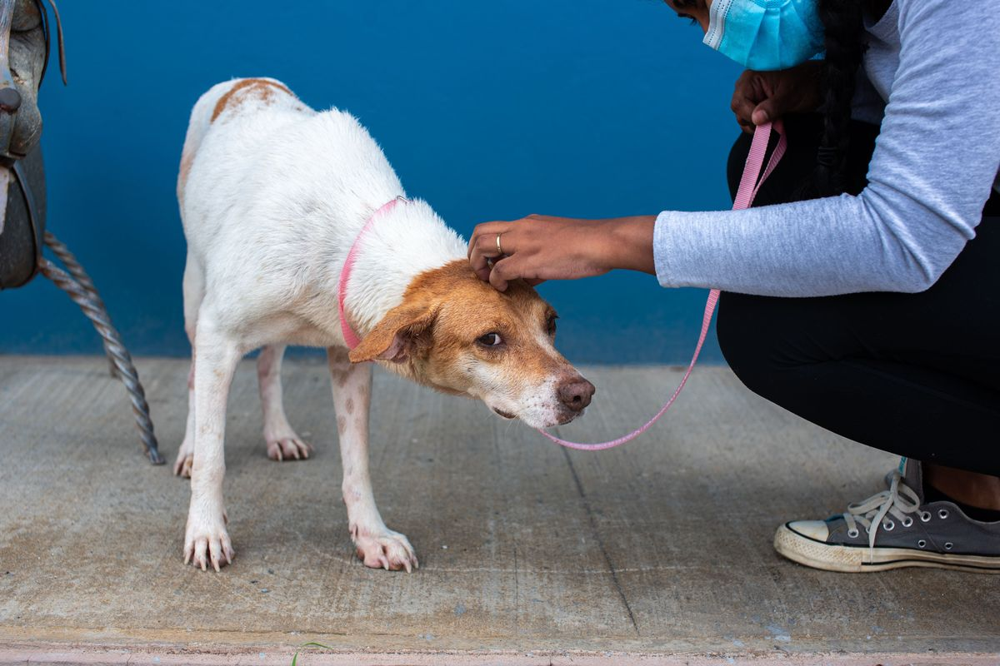

Frentes de Atuação
Atuamos no resgate de animais em risco, na reabilitação veterinária e na adoção responsável.

Campanhas de Doação
Sua contribuição mantém o abrigo funcionando. Você pode ajudar de duas formas:

Doação financeira
Valores de qualquer quantia ajudam a pagar consultas, vacinas e castrações.
Doação de suprimentos
- Ração para cães e gatos
- Medicamentos e produtos de higiene
- Cobertores e caixas de transporte
Programa de Voluntariado
Você pode apoiar o dia a dia do abrigo com tarefas como:

- Passeios e socialização dos animais
- Limpeza e organização dos espaços
- Divulgação de animais para adoção
Para participar, faça seu cadastro.